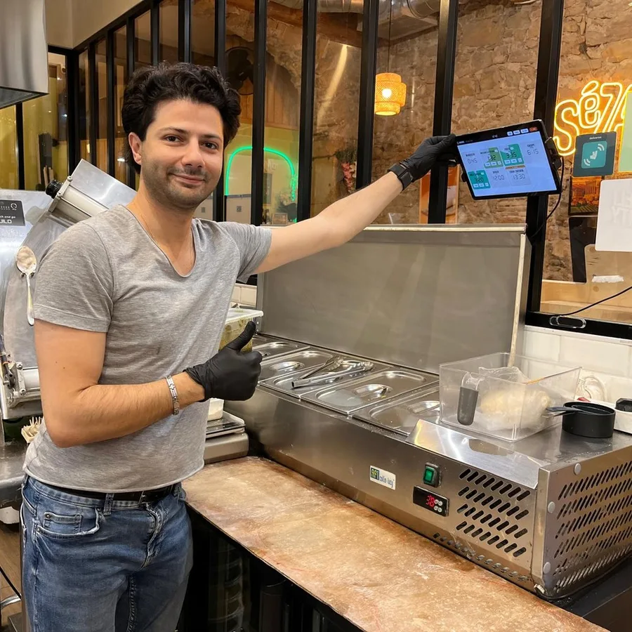

Le minuteur de cuisine qui vous dit quand c'est prêt
Chaque plat a son minuteur, sa sonnerie et sa voix.
Gratuit au lancement, sans compte, sans abonnement. iPad, iPhone et Android.
Fait par des restaurateurs, pour des restaurateurset les amateurs de cuisine en tout genre.


Fini les plats cramés et le stress du coup de feu
Dix boîtiers sur le passe, dix bips identiques. On sait plus lequel sonne, on lâche le poste pour aller voir, et le steak est trop cuit. On en a eu marre, alors on l'a codé.
Plusieurs minuteurs de cuisine sur un seul écran, une voix qui nomme le plat, une sonnerie pour chacun : vous savez tout de suite lequel est prêt.
Des rappels à voix haute, à chaque poste
Chaque plat s'enchaîne tout seul, phase par phase
Un plat, c'est rarement un seul décompte. Il faut saisir, retourner, laisser reposer. L'app enchaîne les phases sans que vous touchiez à rien et annonce chaque changement d'étape à voix haute : « Retourner », puis « Steak, c'est terminé ». Vous gardez les mains dans le plat, l'info arrive à l'oreille.
- Étapes de cuisson nommées : saisir, retourner, repos
- Annonce vocale de l'étape suivante et du plat prêt, par son nom
- Mains libres : vous ne quittez jamais le poste
Chaque plat a sa propre sonnerie de minuteur
Frites, steak, poulet, focaccia : chaque plat a sa propre sonnerie. Dès que ça sonne, vous savez ce qui est prêt sans lever les yeux. Fini les dix bips identiques — douze sonneries au choix, et la voix nomme le plat par-dessus.
- Vous savez quel plat sonne à l'oreille, sans regarder l'écran
- Réglé une fois, valable pour toute la brigade
Touchez un plat pour entendre sa sonnerie.
La mise en place, mais pour le temps : vos recettes, vos temps de cuisson
Le restaurant enregistre ses propres cuissons une bonne fois. On choisit le plat, tout part avec les bons temps et les bonnes phases. L'app répète votre méthode, elle n'invente aucun temps. Le steak cuit pareil que ce soit le chef ou l'extra du samedi.
- Vos plats, vos noms, vos temps de cuisson enregistrés
- La même cuisson à chaque service, quel que soit le poste
- Un nouveau opérationnel en cinq minutes, guidé à la voix
- Français et anglais pour toute la brigade
Minuteur de cuisine classique ou CookOnTime : ce qui change
Les boîtiers classiques
- Plusieurs plats à la fois1 à 4 par boîtier, il faut en aligner plusieurs
- L'alerteUn bip anonyme parmi dix
- Reconnaître le platTous le même bip
- Étapes de cuissonUn seul décompte à relancer à la main
- LisibilitéPetit cadran, à tenir sous les yeux
- Le tiroir à minuteursEn acheter, les perdre, changer les piles
- Méthode maisonRien en mémoire, on retape tout
CookOnTime
- Plusieurs plats à la fois20 minuteurs et plus sur un seul écran
- L'alerteUne voix qui nomme le plat
- Reconnaître le platUne sonnerie par plat, 12 au choix
- Étapes de cuissonPhases enchaînées automatiquement
- LisibilitéTuile lisible à trois mètres
- Le tiroir à minuteursTerminé : c'est la tablette que vous avez déjà
- Méthode maisonVos recettes et vos temps enregistrés
Pour ceux qui vivent le coup de feu
Testé en plein service
Sezam&Co restaurant à Lyon, client depuis juillet 2026
« On s'en sert à chaque service. Chaque plat sonne à sa façon, et plus personne ne se trompe de minuteur. »
Les questions qu'on nous pose
Quelle est la meilleure application de minuteur pour la cuisine ?
CookOnTime est une application multi-minuteurs : elle fait tourner plusieurs minuteurs en même temps, un par plat. Chaque plat a sa sonnerie, et une voix annonce quand il est terminé. L'app répète vos propres temps de cuisson. Elle est pensée pour une tablette en cuisine, en plein service, et marche aussi sur téléphone.
Combien coûte CookOnTime ?
CookOnTime est gratuit au lancement : sans abonnement, sans publicité et sans compte à créer.
Où vont mes données ?
Vos plats, vos temps et vos réglages restent sur votre tablette, et il n'y a aucun compte à créer. Au premier lancement, l'app vous demande si vous acceptez de partager des statistiques d'usage ; dans la version actuelle, elle n'envoie rien. Le détail est dans la politique de confidentialité.
Comment gérer plusieurs minuteurs en même temps sans se tromper de plat ?
Faites tourner plusieurs minuteurs côte à côte : chaque cuisson porte son nom à l'écran et à la voix, et chacune peut avoir sa propre sonnerie. Tous vos plats tournent en parallèle sur un seul écran : vous savez tout de suite lequel sonne. Impossible de confondre le minuteur du steak avec celui de la garniture.
L'application fonctionne-t-elle sur iPad, tablette Android et iPhone ?
Oui, sur les trois. Un iPad ou une tablette Android bas de gamme, montée au mur, écran toujours allumé, suffit — et l'app tourne aussi sur iPhone et téléphone Android quand vous voulez un minuteur dans la poche. Vous équipez chaque poste avec la même app.
Le minuteur annonce-t-il vocalement quand le plat est prêt ?
Oui, c'est un minuteur qui parle : l'app annonce à voix haute l'étape suivante puis le plat prêt, par son nom. Vous gardez les mains dans le plat, l'info arrive à l'oreille sans fixer l'écran.
Peut-on enregistrer ses propres recettes et temps de cuisson ?
C'est tout le principe. Vous saisissez vos plats, vos temps et vos phases une bonne fois. L'app répète votre méthode maison à l'identique sur toutes les tablettes. Elle n'invente aucun temps.
L'application fonctionne-t-elle sans connexion internet, en hors-ligne ?
Oui. Chaque tablette est autonome et stocke tout en local. Si le wifi tombe en plein rush, le service continue sans interruption.
Peut-on enchaîner plusieurs étapes de cuisson dans un même minuteur ?
Oui, c'est le cœur de l'app. Un plat peut avoir plusieurs phases nommées (saisir, retourner, repos) qui s'enchaînent automatiquement, avec une annonce vocale à chaque changement d'étape.
L'application est-elle disponible sur l'App Store et Google Play ?
Elle arrive bientôt sur l'App Store et Google Play.
Bientôt sur vos tablettes et téléphones. Gratuit.
L'application de minuteur de cuisine arrive sur l'App Store et Google Play. Gratuite, sans compte à créer.